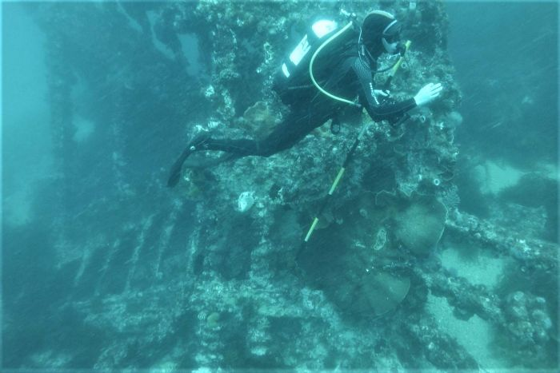

Ernst and Wilhelmina Zimmermann brought the Zimmermann family from Germany to Australia.
There are two parts to this article:
In the late middle ages, Germany was not a united country like it is today. Simplistically speaking, it was a collection of smaller kingdoms or duchies1, with an emperor elected to look out for the interests of the whole.
The Thirty Years War involved most of the European powers. Because of its central position, Germany suffered greatly during the war; a third of the population perished. Much of the population gave up on farming and went elsewhere.
The Kingdom of Prussia was formed after the union of Brandenburg and the Duchy of Prussia.
The Seven Years' War involved all the major powers in Europe. Austria and Prussia had their own conflict as they both sought to gain control of Germany. Prussia survived against a collition of France, Austria, and Russia thanks to Britian pumping money into Prussia.
Napoleon's French army conquered Germany and formed the Confederation of the Rhine to provide him with resources and a buffer from Prussia and Austria. He then defeated the Prussians and made them subordinate to Russia
However, in 1813, the Confederation of the Rhine collapsed after Napolean's loss in Russia.
Our story starts here
Harvests failed and there was a massive revolution in Germany
World War I ends the Prussia Empire
Interestingly, the name of the British Royal Family was changed from the German Saxe-Coburg-Gotha to the English Windsor in 1917, due to anti-German sentiment.
World War II started with much of the discontent and radical ideas coming from what used to be Prussia
As described above, the years leading up to these events were tumultuous and difficult times.
She was christened the next month in Wollschow, Brüssow, Prenzlau, Brandenburg.
They boarded the "Herschel" in Hamburg and took a three month voyage to Australia, landing in Moreton Bay on 7 March 1872. The boat2 carried 250 immigrants including Wilhelmine's sisters Frederick and Ernestina (her brother and parents also moved to Australia in 1873)

Englesburg was renamed to Kalbar due to anti-German sentiment during World War I3.
1 A Duchy is the area ruled by a duke or duchess; similar to a king/queen and kingdom, but smaller
2 The Herschel transported several groups of people to Australia and was eventually scuttled in 1907. Its resting place was unknown for 112 years, but it was very recently discovered by a diver. See ABC news article